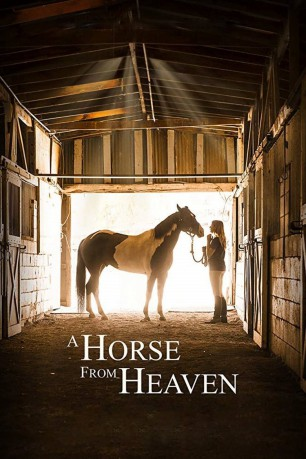

#11596 A Champion Heart
Alternativ: A Horse from Heaven (Englischer Titel)
 gesehen am 14.09.2019
gesehen am 14.09.2019
 
 IMDB-Wertung: 4.8 / 10
IMDB-Wertung: 4.8 / 10  Metascore: 0
Metascore: 0 
Als ihre Mutter stirbt, zieht Mandy (Mandy Grace) in eine andere Stadt um einen Neuanfang zu wagen. Doch dies gestaltet sich schwieriger als gedacht und schon bald findet sich die 15-jährige auf einem Pferdehof wieder, um einen Schaden auszugleichen, für den sie nur bedingt verantwortlich war. Auf dem Hof lernt sie allerdings den Hengst Tux kennen, der ebenfalls vom Leben gezeichnet ist: Dem Tier fehlt ein halbes Ohr. Zusammen lernen die beiden endlich wahre Freundschaft kennen.
Jahr: 2018
Dauer: 90 Minuten
FSK:
Land: USA Studio: Devotion FilmsTonspuren: - , - ,
Untertitel:
Auflösung: 1080p (1920x800) Größe: 5488 MB
Genre: Familie
Regisseur: David de Vos
Drehbuch: David de Vos, Stephanie de Vos
Soundtrack:
Darsteller:
- Donna Rusch als Diane
- Isabella Mancuso als Zoey
- Ariana Guido als Lauren
- Candace Kozak als Trailer Park Girl
- Todd Wilkerson als Chemistry Teacher
- Sunny Hoffman als Discovery Arts Counselor
- Austin Brooks als Dr. Brooks
- Ryan O'Quinn als Darrell Sparkman (Announcer)
- Mandy Grace als Mandy
- Devan Key als Bradley
- David de Vos als Jack
- Caris Kozak als Sarah
- Steven Kirk als Radio DJ
- Jackie Kozak als Trailer Park Mom
- Matthew Reithmayr als Sportscaster
- Dana Risvold als Horse Whisperer
- Taylor James als Ranch Hand
- Maya Primeau als Pregnant Trainer
- Stephanie de Vos als Mandy's Mom
- Joe Mancuso als Zoey's Dad
- Faith Beisel als Abby Joy (Girl in Picture)
- Frederick Fozounmayeh als Barbecue Man
- Fosi Fozounmayeh als Burger Boy
- Shirin Fozounmayeh als Pixie Rider
- Michelle Fozounmayeh als Pixie Adopter
- James Mulligan als Adoption Day Dad
- Ashlynne Mulligan als Adoption Day Girl
- Sawyer Mulligan als Adoption Day Boy
- Debbie Price als Zoey's Trainer
- Lauryn Emily Arroyo als Young Lady at Training
- Jessica Huff als Mom at Training
- Parker Hupf als Girl at Training
- Dan Moberly als Construction Foreman
- Karen Harper als Tack Shop Owner
- Abby de Vos als A.J. Fox (Announcer)
- Bonnie de Vos als Mandy's Oma
- Jim de Vos als Mandy's Opa
- Joelle Mancuso als Claudia (Zoey's Mom)
- Ashtyn Risvold als Horse Show Rider
- Caitlyn Robertson als Ribbon Girl #1
- Marley Anderson als Ribbon Girl #2
- Mallorie Mauss als Rider #236
- Ian Robertson als Horse Show Worker
Datei: X:\2018(A-F)\Champion Heart, A (2018, FSK, 1920x800).mkv seit 13.08.2019
Festplatte: HD 2017(A-Z)-2018(A-F)
 Es gibt insgesamt 151 Filme in der Gruppe '2018(A-F)'
Es gibt insgesamt 151 Filme in der Gruppe '2018(A-F)'